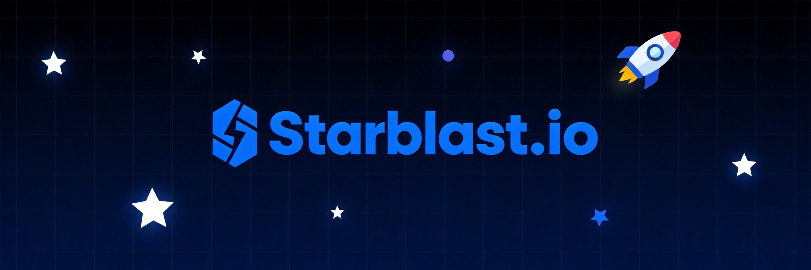
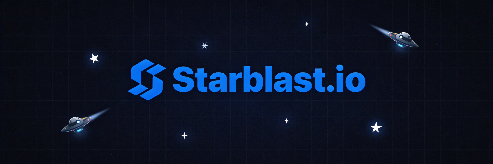

Starblast.io takes .io games to outer space—and I mean that literally. You pilot a spaceship, mine asteroids for crystals, and upgrade your ship into an increasingly devastating weapon. The progression system hooked me immediately. Starting in a tiny fighter and working your way up to a heavy destroyer just feels satisfying. But the combat? That's where things get spicy.
🎯 Game Basics

Your Mission
Mine asteroids for crystals, use those crystals to upgrade your ship, and survive encounters with other players. The better your ship, the easier mining becomes, which helps you upgrade further. It's a positive feedback loop—but only if you stay alive long enough to enjoy it.
Crystals and Energy
Crystals are your currency. Mining asteroids yields crystals, and you spend them at stations to upgrade. Energy powers your weapons and abilities. Balancing mining runs with combat readiness is the core challenge.
- Green crystals - Common, found in most asteroids
- Blue crystals - Rare, worth more, found in special asteroids
- Energy - Regenerates over time, powers weapons
- Health - Decreases when hit, regenerate slowly or at stations
The Map
The space map has various zones with different asteroid densities. Central zones have better rewards but more competition. Edge zones are safer but slower for progression.
🚀 Ships & Upgrades
Ship Tiers
Starblast.io features three tiers of ships. Tier 1 ships are starting vessels—nimble but weak. Tier 2 offers balanced combat potential. Tier 3 ships are heavy hitters with serious firepower.
Upgrade Paths
At upgrade stations, you can:
- Repair - Restore health (costs crystals)
- Refill energy - Top off your energy reserves
- Upgrade ship - Evolve to a more powerful ship class
- Buy shields - Temporary invulnerability
Ship Classes
Different ships excel at different things. Fighters are great for quick attacks. Bombers pack serious damage. Interceptors are all about speed. Choose based on your playstyle.
When you die, you respawn as a Tier 1 ship with minimal crystals. All your upgrades vanish. Playing conservatively and banking crystals regularly prevents devastating losses.
⛏️ Mining Strategies
1. Focus on Green Asteroids First
Green asteroids are abundant and safe. Start here to build up your crystal reserve. Ignore blue asteroids until you have enough firepower to handle the tougher enemies they attract.
2. Mining Loadouts
Some ship builds are specifically optimized for mining. If grinding is your thing, look for ships with wide firing arcs and rapid-fire weapons. You'll clear asteroids faster.
3. Know When to Move
If other players show up at your mining spot, leave. The crystals aren't worth dying for, especially early game. Relocate and find another productive zone.
4. Bank Your Crystals
I always keep a mental note of how many crystals I can afford to lose. If I'm sitting on a big pile, I'll play more defensively. That stack represents hours of grinding.
⚔️ Combat Tactics
1. Use the Environment
Asteroids provide cover. Duck behind them to break line of sight, then pop out to fire. Larger ships should use asteroids to block pursuing enemies.
2. Know Your Range
Each ship has optimal engagement ranges. Some ships excel at close-range brawling, others at long-range harassment. Don't try to outfight ships built for different ranges.
3. The Strafe Dance
Keep moving while shooting. Stationary targets are easy kills. Strafe left-right while aiming at your opponent. It makes you harder to hit and puts pressure on enemies.
4. Focus Fire in Teams
In team modes, coordinate attacks. Two ships focusing one target kills it twice as fast. Never split fire when you can集中火力 instead.
💎 Survival Tips
Watch the radar constantly. It shows enemy positions. If you see multiple reds converging on your location, relocate immediately. Numbers win fights.
Play edge zones when you're vulnerable. Lower-tier ships have no business in the center. The edge has fewer players and lets you grind safely.
Upgrade to more durable ships before risky moves. A stronger ship survives ambushes that would destroy a weak one. Don't get cocky in a fragile vessel.
Retreat when critical. Health low and enemies nearby? Run. Find an upgrade station to repair. Dying with resources is always worse than escaping empty-handed.
5. Asteroid Mining Efficiency
Different asteroid types yield different rewards. Larger asteroids take longer to destroy but give more crystals. Smaller asteroids are quick pickups for rapid farming. Balance speed versus reward based on situation.
6. Energy Conservation
Weapons drain energy quickly. During mining phases, use minimal weapons to conserve for combat encounters. Full energy reserves mean you're ready for fights at any moment.
7. Radar Reading
The radar shows enemy positions as red dots. Study radar constantly to avoid ambushes and plan engagements. Knowing where enemies are lets you control every fight.
8. Shield Timing
Shields provide temporary invulnerability at upgrade stations. Use shields before high-risk moves, not after you're already dying. Shield anticipation beats shield desperation.

💎 Pro Tips
Master one ship class before exploring others. Each ship has unique handling. Becoming proficient with one type first builds skills that transfer across classes.
Team games require communication. Coordinate with teammates about targets, positions, and resource sharing. Organized teams dominate disorganized ones every time.
Use boost wisely. Speed boost helps escape pursuers but drains energy. Save it for emergency situations when your life depends on outrunning someone.
Practice in Invasion mode first. This PvE mode lets you learn ship handling and combat without the pressure of other players. Perfect for beginners.

❓ Frequently Asked Questions
How do I upgrade my ship in Starblast.io?
Find an upgrade station (they appear on your map) and fly to it. You'll see options to repair, refill energy, or upgrade your ship class. Upgrading costs crystals.
What's the best starting ship?
The Pulse Fighter is solid for beginners—balanced stats and easy to handle. As you improve, explore other classes to find your preferred playstyle.
How do I earn crystals fast?
Focus on asteroid mining in areas with low player traffic. Larger asteroids yield more crystals. Avoid combat until you've built up a substantial reserve.
Can I play with friends?
Yes, create a team and share your team code with friends. Team mode enables coordinated play, shared crystals, and team-based combat against other squads.
What happens when I die?
You respawn as a Tier 1 ship at a random location. You keep nothing—not your crystals, not your upgrades. Bank crystals by staying alive to minimize losses.
How do team games work?
Teams share crystal pools and can see each other's positions on radar. Work together to mining efficiently, share upgrade stations, and coordinate attacks on enemies.
📝 Related Games to Try
If you enjoy space combat, try Diep.io for tank battles, Wings.io for aerial dogfights, or Krunker.io for fast-paced FPS action.
📝 Conclusion
Starblast.io offers satisfying progression wrapped in tense space combat. The cycle of mining, upgrading, and fighting creates addictive gameplay. Stay smart about survival, and your upgrades will compound into unstoppable force.
Launch into the void and claim your territory! The stars await, commander.
Last updated: January 20, 2024
Written by the iogameguide.com team